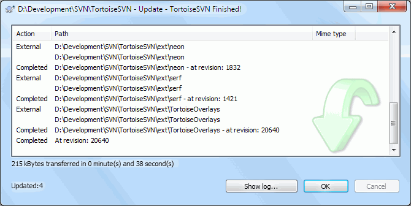
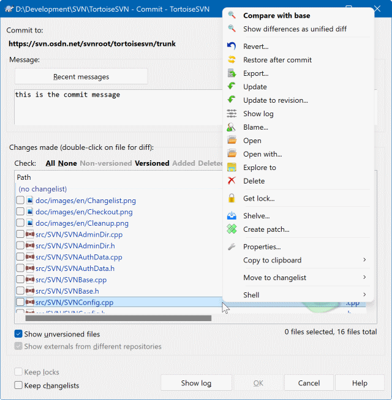
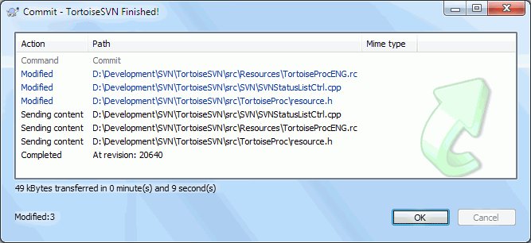

4日常三件事：改、更、提
前面三节都是准备。从这一节开始，是你每天真正要干的事： 更新（Update）、修改（Edit）、提交（Commit）。这三步走顺了，SVN 对你来说就已经会用了。
SVN 是集中式版本控制——所有人改的都是服务器上那同一份仓库。你本地这一份，只是它在你检出那一刻的快照；之后服务器上发生了什么，你不主动问，它不会告诉你。
- 不更新，就不知道别人改了什么。同事昨天的改动，今天不点更新，你本地还是老样子。
- 不更新就提交，常常提交不上去。SVN 发现你要提交的文件在服务器上已经变了，会拦下来让你先更新。
- 最麻烦的是「冲突」（Conflict）。你和同事改了同一个文件的同一处，更新时 SVN 没法替你决定留谁的，会把两边内容同时塞进文件里，等你手工挑。
所以把这句话背下来：开工先更新，干活随便改，收工就提交。多花的十秒钟，能省掉后面半小时的冲突处理。
第一步：SVN Update（更新）
更新的作用只有一个：把服务器上的新内容同步到本地。 别人提交的文件、新建的文件夹、删掉的东西，更新一次全部对齐。 更新不会动你自己还没提交的修改，除非你们改了同一处。
SVN 前缀的那一组里，不用展开 TortoiseSVN 子菜单。（对应的命令行是 svn update，但图形界面里你只需要点这一项。）Finished!。文件多、网速慢的时候会等一会儿，别急着点取消。At revision: 版本号——那是你本地现在所处的版本。
· Action 列：Completed 表示这一项已经处理完毕；External 表示这是个「外部引用」目录，TortoiseSVN 连它一起更新了。
· Path 列：被处理的路径。带 at revision: 1832 后缀的，是这个目录被更新到的版本号；最下面那行 At revision: 20640 是整个工作副本更新后的总版本号——记下它，将来要回退就靠这个号。
· 颜色是有含义的（左侧那一栏的小色块）：紫 新增 蓝 更新 绿 合并成功 亮红 冲突 黑 其他动作。这张图里全是黑色的 Completed / External，说明这一趟没有冲突、也没有需要合并的东西，是最顺利的情况。反过来，只要你看见亮红色的行，就要停下来处理冲突。
· 底部统计行：215 kBytes transferred in 0 minute(s) and 38 second(s) 是这次实际传输的数据量和耗时；再下面那行 Updated:4 是这次更新涉及的条目数。数字小不代表出问题，只代表服务器上这段时间改得不多。
· 按钮：Show log... 可以直接跳到日志，看看这次更新到底带来了哪些提交；OK 关闭窗口。
第二步：修改文件
这一步最简单：用你习惯的任何编辑器直接打开文件改，改完保存。 SVN 不需要你事先「打招呼」，不需要点任何按钮。
先找「检出为可写」，把文件变成可改状态
改之前先「独占签出」，怕别人也改
改完再执行一次「签入」把文件还回去
→ 在 SVN 里这些都是多余的，白折腾
双击文件，直接改，保存——完事
改完文件角标会自动变成红色叹号
谁改了什么，SVN 自己在后台记着呢
→ 只有二进制文件（如设计稿、Office 文档）才需要事先加锁，见第 18 节
如果你打开文件发现是只读的，多半是管理员给这类文件设了 svn:needs-lock 属性（典型的二进制文件防冲突手段）。
正确处理：TortoiseSVN → Get lock 先加锁，文件就自动变可写；改完提交，锁自动释放。第 18 节会专门讲锁。
第三步：SVN Commit（提交）
提交 = 把你本地这些改动正式送进服务器，同时生成一个新的版本号。 这一步做完，同事更新一次就能看到你的成果。
SVN 前缀那一组里的第二项，点它不会弹子菜单，直接打开提交对话框。
① 标题栏：D:\Development\SVN\TortoiseSVN - Commit - TortoiseSVN。破折号前面是你正在提交的本地文件夹，养成先扫一眼标题的习惯——它能防止「对着错误的目录点了提交」。
② Commit to:：这次提交要送到服务器上的哪个地址，形如 https://服务器/svn/项目名/trunk，末尾那段就是仓库里的路径。提交到错误分支，是新手最贵的一课。
③ Message 区：提交说明，必填。输入框上面那个 Recent messages 按钮，会把你以前写过的提交说明列出来，重复性的活儿（比如每次都是「更新文档配图」）直接翻出来改一改就行。框里已有的 this is the commit message 是上一次写的内容，可以接着改。
④ Changes made：这次提交涉及的文件列表，也就是「哪些文件会被交上去」。每一项前面都有勾选框，只有勾上的才会提交。表头写着 (double-click on file for diff)：双击任意文件可以看它到底改了什么（第 6 节详讲）。列表里 (no changelist) 这一行是分组标题，把文件按「变更列表」归组；平时不设置变更列表的话，文件都归在这一组下面。
⑤ Check: 后面的快速过滤链接——文件多的时候靠它提效：All 全选 / None 全不选 / Non-versioned 只看未纳入版本控制的 / Versioned 只看已纳入版本控制的 / Added 只看新加入的 / Deleted 只看标记删除的。
⑥ 文件列表的右键菜单（图中右侧展开的那一条）：Compare with base 与库里的原始版本比对、Show differences as unified diff、Revert... 撤销这个文件的本地改动、Export...、Update、Update to revision...、Show log、Blame... 逐行看是谁改的、Open / Open with...、Explore to 打开所在文件夹、Delete（红色，危险）、Get lock...、Properties...、Move to changelist 等。发现某个文件不该提交，不必关掉对话框，在这里直接 Revert 或取消勾选即可。
⑦ Show unversioned files：勾上后，还没被 SVN 管起来的新文件也会出现在列表里。想顺手把新文件一起带上，就勾它——相当于在提交的同时做了「新增」（第 7 节讲）。它下面那行灰着的 Show externals from different repositories，是给「外部引用」用的，日常不用管。
⑧ Keep locks：勾上表示提交完不解锁。只有当你给文件加过锁、并且还想继续独占修改时才需要勾（第 18 节）。日常提交保持不勾。它下面的 Keep changelists 是保留变更列表分组，同样按需使用。
⑨ 右下角统计：0 files selected, 16 files total——当前勾选了 0 个文件，列表里一共 16 个候选。点 OK 之前一定看这里：显示 0 说明你什么都没勾，点了也不会有任何东西提交上去；数字远大于预期，说明你勾多了，回去再筛一遍。
⑩ 底部按钮：Show log 看历史、OK 开始提交、Cancel 取消、Help 帮助。
- 先更新，再提交。更新的目的不是「拿别人的代码」，而是让 SVN 提前发现冲突。冲突在提交前发现，你还有时间从容处理；提交时被拦下，往往得从头再走一遍。
- Message 一定要写清楚。提交说明是写给三个月后的自己看的。当时觉得「一眼就懂」的简写，三个月后就是天书。团队里最好约定统一格式（比如带上任务单号）。
| 提交说明的写法 | 例子 | 一个月后查历史的效果 |
|---|---|---|
| 差 只写「改了」 | 改了一下 | 没人知道改了什么，等于没写 |
| 中 只说结果 | 修复登录问题 | 能看个大概，但不知道影响范围，不敢回退 |
| 好 改了什么 + 为什么 + 影响谁 | 登录：修复验证码过期后无法重发的问题（影响 Web 端） | 一眼看懂，敢放心回退 |
| 团队推荐 带上任务单号 | #1234 登录接口增加频率限制 | 能和任务系统对上号，追责与复盘都方便 |
提交进度对话框
点下 OK 之后弹出的窗口，是提交是否成功的最终凭证。它跑完，才算真的提交完了。

· 颜色：和更新对话框是同一套配色——紫=新增、蓝=更新、绿=合并成功、亮红=冲突、黑=其他。
· 底部统计：49 kBytes transferred in 0 minute(s) and 9 second(s) 是上传的数据量和耗时；Modified:3 是这次提交里「已修改」类文件的个数。
· 按钮：网络卡住时可以点 Cancel 中断，但不要闲着没事去点它，更不要在跑到一半时强关窗口。
把这个新版本号记下来（本例是 20640），将来要回退时，它就是你的坐标。
开机先 Update，改完看角标；
提交前再 Update，Message 写清再点 OK；
看见新版本号，今天这活儿才算完。